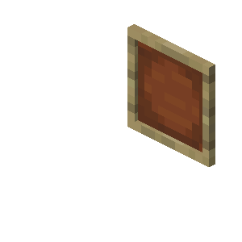

Emoldure as suas tarefas
Manter um registo do que precisa de ser feito em casa já não precisa de ser um bicho de sete cabeças — nem de lhe pôr os cabelos em pé. Distribua tarefas, acompanhe o progresso, analise o trabalho e partilhe com todos na casa. Chega de sobrecarga mental para uma só pessoa. Quer seja dar comida ao cão, regar as plantas, passar o aspirador atrás do sofá ou organizar a noite de jogos em família, pode finalmente ter tudo num só sítio. A sua família (e as suas plantas) vão agradecer.